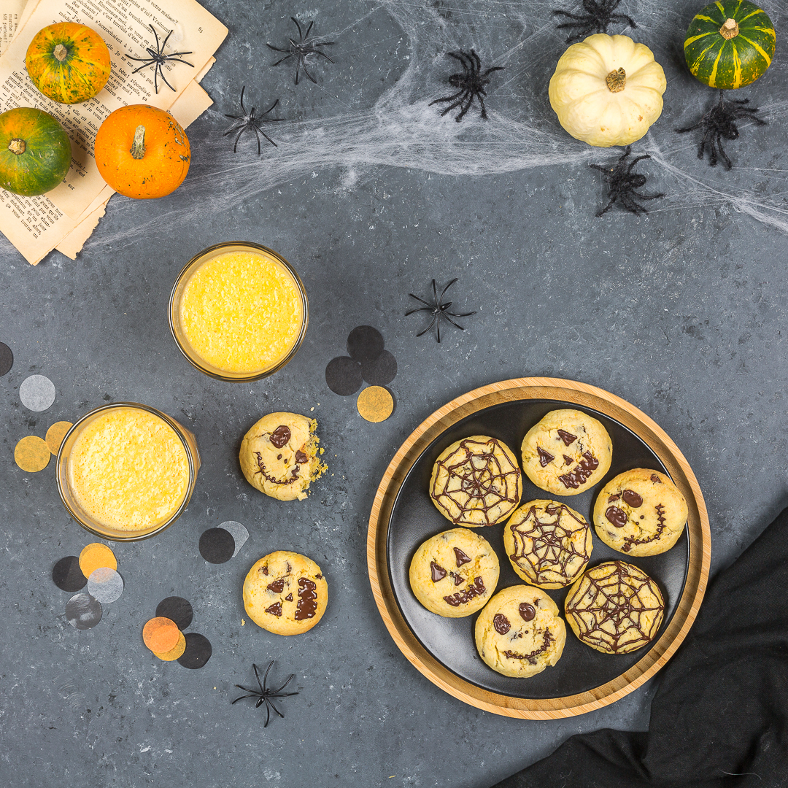

Cookies au potiron

Hello les gourmands! Si je ne me trompe pas Halloween approche à grand pas!!! Pour cette occasion je vous propose une recette de cookies au potiron à faire et refaire pour petits et grands.
S’il est vrai que la fête d’Halloween ne correspond pas vraiment à ma génération, on se laisse malgré tout de plus en plus tenter par l’engouement qu’elle prend au fil des ans (et côté cuisine on peut laisser libre cours à son imagination et ça j’adore!) Cette année j’ai décidé de m’essayer à des choses simples qui ne prennent pas trop de temps et qui sont faciles à faire pour tout le monde (même si pour le jour J je pense faire quelque chose de plus terrifiant et sanguinolent !!!! ;)).
Pour en revenir à ces cookies au potiron, ils sont DE-LI-CIEUX et surtout très très moelleux (même après 3 jours de conservation). J’ai essayé différents dosages afin qu’ils ne se craquèlent pas trop pour pouvoir faire les petits décors en chocolat sur le dessus. Il suffit simplement, à la toute fin de cuisson, de les aplatir légèrement avec le dos d’une cuillère si certain ont trop gonflé. J’ai essayé aussi plusieurs « taille » de cookies et je vous conseille de faire des boules de 30 gr et ils seront parfaits ;).
Pour ceux qui se demandent si le goût du potion est prononcé, je vous répond tout de suite que PAS DU TOUT! Le potiron apporte principalement un grand moelleux, un peu comme quand on en met dans les brioches par exemple pour ceux qui ont déjà essayé
J’ai réalisé cette recette dans le cadre de ma collaboration avec l’enseigne grand frais (qui propose des fruits et légumes d’une qualité incroyable) et les potirons, potimarron, courge etc ne dérogent pas à cela!!
Je vous laisse avec la recette écrite ET vidéo 😉 et je vous dis à très vite avec une nouvelle recette!!
Ingrédients
- Purée de potiron - 140g
- Farine - 190g
- Levure chimique - 1 sachet
- Poudre d'amandes - 100g
- Pépites de chocolat - 100g
- Oeuf - 1
- Vanille - 1 càc
- Fleur de sel - 1 pincée (facultatif)
- Sucre (complet ou a defaut cassonnade) - 80g
- Beurre - 120g
- Chocolat (noir ou au lait..) - environ 50g
- Douille
Instructions
- Préchauffez le four à 180°C
- Coupez un morceaux de potiron et découpez-le en morceaux (avec la peau)
- Coupez un morceaux de potiron et découpez-le en morceaux (avec la peau)
- Disposez ces morceaux de potiron sur une plaque allant au four
- Faites les cuire environ 20-30 minutes (selon la taille, pensez à vérifier la cuisson)
- Les morceaux vont se ramollir, on doit pouvoir prélever la chair facilement
- Laissez les morceaux refroidir et enlever la peau
- Écrasez les morceaux à la fourchette et c'est prêt !
- Pesez 140g et passez à la préparation des cookies!! (Si jamais les morceaux ont rendu trop d'eau, essorez dans une passoire)
- Dans le bol de votre robot battre le beurre mou avec le sucre et ajoutez l'extrait de vanille
- Ajoutez l’œuf et battre à nouveau
- Incorporez la purée de citrouille, et la pincée de sel
- Versez progressivement les ingrédients secs (farine, levure, amande puis les pépites de chocolat)
- Mélangez de façon à obtenir une boule de pâte homogène et laissez reposer une heure au frais
- Préchauffez le four à 180°C
- Formez des boules de 30g environ
- NE LES APLATISSEZ PAS
- Enfournez à 180 pendant 10 minutes
- Laissez refroidir
- Faire fondre du chocolat noir ou au lait (au bain marie)
- Quand les cookies ont refroidi, versez le chocolat dans une poche à douille munie d'une douille très fine
- Décorez vos cookies et laissez parler votre imagination!!
Les tips de la communauté
Cookies appréciés pour leur originalité et goût moelleux remarquable. Les enfants et parents ont aimé. Les lecteurs louent régulièrement les recettes du blog pour leur qualité et apparence.
Astuces
- Ces cookies sont très moelleux, ce qui les distingue positivement